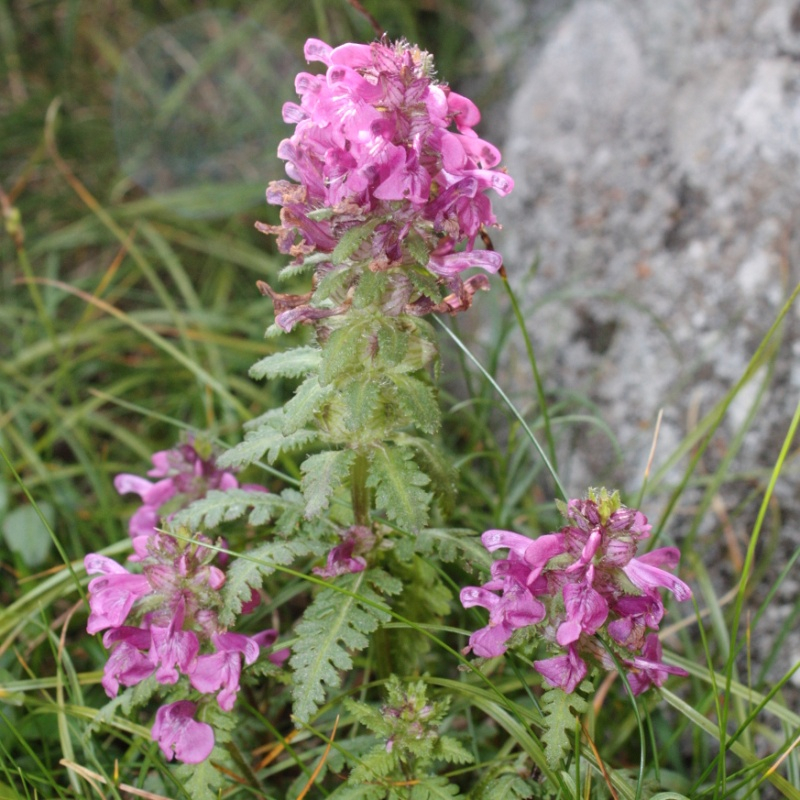

Pedicularis verticillata
Common name
Whorled Lousewort
Family
Orobanchaceae
Family common name
Broomrape family
Blooms
L May - E August
Habitat
Pastures and grassland. Poor, mostly calcareous soils, to 2800 m. (9000 ft).
Range Map